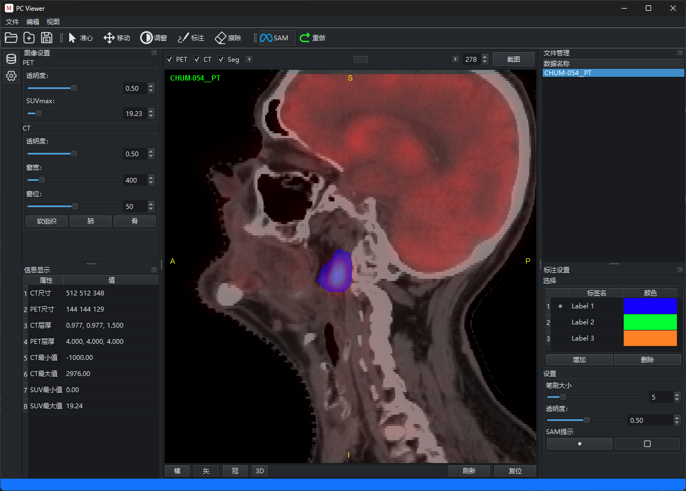

基于 SAM2 的 PET/CT 医学影像分析软件，集成 AI 智能分割、多平面重建与 3D 可视化，为科研与教学提供专业级影像标注工具。

从影像导入到病灶分割，提供完整的 PET/CT 分析工作流
集成 SAM2 分割模型，支持 ONNX 加速推理，实现 PET/CT 图像的自动病灶分割与手动标注。
支持横断面、矢状面、冠状面多视图同步浏览，配合窗宽/窗位调节与层间快速跳转。
基于 VTK 引擎实现三维体渲染与表面重建，支持分割结果的立体可视化展示。
支持 DICOM 与 NIfTI 格式导入，自动解析患者信息，YAML 配置文件管理影像路径。
模型加载、图像预处理与推理均在后台线程执行，确保 UI 始终保持流畅响应。
本地化部署与推理，患者数据不离开本机，完善的日志记录与数据脱敏机制。
精选经过验证的开源库，确保稳定性与可扩展性
克隆仓库，安装依赖，即可开始使用
选择适合您的安装方式
免责声明：本软件仅用于科研与教学目的，不作为临床诊断或治疗决策的直接依据。使用者应自行承担相关责任。